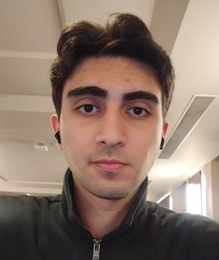

Temiz kod, güçlü mimariler ve kullanıcı odaklı çözümler üretiyorum. Backend'den frontend'e, fikirden ürüne.

Merhaba! Ben Yunus Emre Tom, bir Full Stack Yazılım Geliştiricisiyim. Backend'den frontend'e, her katmanda kod yazmayı ve problem çözmeyi çok severim. Özellikle yapay zeka, mikroservisler ve ölçeklenebilir sistemler üzerine yoğunlaşıyorum.
Yazılıma olan ilgim ortaokul yıllarında başladı. O günden bu yana Python, C#, Java, HTML-CSS-JS ekosistemleri üzerinde çalışmalar yaptım. Ayrıca rc uçak ve drone projeleriyle de ilgileniyorum, bu da bana gömülü sistemler ve gerçek zamanlı veri işleme konularında deneyim kazandırdı. Ayrıca amatör iha pilotuyum, bu da bana havacılık ve drone teknolojileri hakkında derinlemesine bilgi sağladı.
Yapay zeka alanında görüntü işleme ve sesli asistan projeleri üzerinde çalışmalar yaptım. Hala da devam etmekteyim.
Temiz mimari, test odaklı geliştirme ve sürdürülebilir kod benim için temel prensipler. Bir projeyi bitirmek değil; doğru bitirmek önemlidir.
ROS2 ve PX4 altyapısı üzerinde YOLO tabanlı görsel hedef takibi, GPS telemetri analizi ve offboard drone kontrol denemelerini bir araya getiren araştırma odaklı bir proje.
TOM AI, sesli komutları anlayabilen, işleyebilen ve sesli yanıt verebilen bir yapay zeka asistanıdır. Asistan şuan geliştirme aşamasındadır.
Projelerimize uygun olarak özelleştirilmiş bir Qgroundcontroller arayüzü geliştirme girişimi.
Yeni bir proje, iş birliği teklifi veya sadece merhaba demek için her zaman açığım. Bana ulaşmak için aşağıdaki iletişim bilgilerimi kullanabilirsin:
yunusemretom@gmail.com